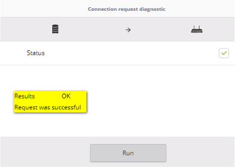

LENTITUD E INESTABILIDAD
Validar Nivel Cero
1. Revisar Saldos Pendientes.
2. Revisar Suspension en la OP 25.
3. Revisar si tienes ordenes abiertas
5. Revisa la pagina de Fallas generales
6. Revisa Si tiene quejas abiertas
7. Revisa Si Aplica para FULL CLARO
8. Si en PISA sale el sticker de MIGRACION, verificar cobertura
¿Nivel Cero OK?
Equipo Soporta Velocidad Actual
| Docsis 3.0 | Velocidad Máxima (Mbps) |
|---|---|
| TC7300 | 30 Mbps |
| TC8305 | 25 Mbps |
| DPC3928SL2 | 40 Mbps |
| Kaon CG2001 | 25 Mbps |
| CGA0101 | 40 Mbps |
| Router | Velocidad Máxima (Mbps) |
|---|---|
| CGA0112 | 60 Mbps |
| Kaon CG2200 | 200 Mbps |
| Arris TG2482 | 200 Mbps |
| Kaon CG3000 | 300 Mbps |
¿Equipos Soporta Velocidad?
Verificar Niveles en UMP
| Docsis | Portadoras | Upstream (Tx) | Downstream (Rx) - SNR | SNR |
|---|---|---|---|---|
| 3.0 | 2 | 40 dB a 53 dB | -9 dB a 10 dB | Mayor o igual a 33 dB |
| 3.0 | 3 o 4 | 40 dB a 50 dB | -9 dB a 10 dB | Mayor o igual a 33 dB |
¿Niveles OK?
Acciones:
1. ¿Problemas con una sola pagina?
A. Preguntarle al cliente si el problema es con una sola pagina.
B. Realizar pruebas con otras paginas.
C. Si navega en otras paginas: debes indicarle que se comunique a traves de whatsapp para enviar imagenes de las pruebas del tracert, Redes sociales tomaran la imagen y lo escalan al area correspondiente.
2. ¿el Problemas es en un solo dispositivo?
A. Realizar cambio de canal desde UMP
B. Realizar REBOOT desde UMP
C. Si navega otros dispositivos: confirmar con el cliente si navega en otro dispositivo, de ser asi indicarle que revise con su tecnico de confianza el dispositivo que no navega, no se ingresa queja por este motivo
Problema que reporta:
LENTITUD
SI LAS PRUEBAS ES POR WIFI:
1. Indicar que se acerque lo mas que pueda al router.
2. Si tiene repetidores, desconectarlos
3. revisar en UMP si soporta 5 Ghz
4. Si soporta 5G, indicar que se conecte a esta red, si no se conecta realizar cambio de contraseña o cambio de nombre para que cliente se conecte (Previa validacion de titularidad)
6. Si aun no se conecta, indicarle que se conecte en otro dispositico que soporte la red 5G
REALIZA EL TEST SEA WIFI O CABLE:
7. Pide al Cliente un test de velocidad, lo puede hacer en speedtest.net
8. Si no arroja la velocidad contratada: cambiar el canal de datos y realizar REBOOT desde UMP
9. Las luces del router se apagaran, esperar que sincronicen nuevamente las luces
10. Confirma con otro test de velocidad
¿Ya tiene la velocidad contratada?
Preguntar al cliente si puede realizar pruebas desde un PC
SI LAS PRUEBAS ES POR PC:
Realizar ping a google
1. Debes Realizar los siguientes paso:
2. Ver si arroja perdida de paquetes

SI LAS PRUEBAS ES POR MOVIL:
1. Preguntar al cliente si puede realizar ping desde el movil:
2. En caso tal que si, verificar las perdidad de paquetes
3. Si no puede realizar ping en movil, Se Genera Avería - Enviar a Etapa CGE - Colocar en el memo cliente no puede realizar ping - Tipificar como Reclamos ▶ Avería ▶ Internet HFC ▶ Inestabilidad ▶ Se genero averia
Perdida de paquetes mayor a 1%?
Acciones
1. Indicarle al cliente que verifique si esta bien conectado el cable tanto en la PC como en el router.
2. Desconectar y conectar el cable de red
3. Deshabilitar y Habilitar la tarjeta de red.
Dio error al Deshabilitar la Tarjeta?:
Realizar ping a google
1. Debes Realizar los siguientes paso:
2. Ver si arroja perdida de paquetes
Perdida de paquetes mayor a 1%?
ACCIONES:
1. Se debe generar Visita tecnica
2. Tipificar como Reclamos ▶ Avería ▶ Internet HFC ▶ No navega ▶ Se genero averia
3. Actualizar niveles en axiros y pegar niveles actualizados en memo de queja
4. Colocar en el memo el estado del puerto en axiros
ETAPA DE LA QUEJA:
1. Niveles Errones en axiros: Enviar queja a etapa CZO
2. Niveles correctos en axiros: Enviar queja a etapa CGE
Cambiar Nombre de Red y Contraseña:
1. Debes realizar cambio de contraseña y nombre de red en UMP.
2. Debes Validar la titularidad (Ingresa pagina restricciones).
3. Guardas los cambios y refrescas.
Cliente se conecta y Navega?:
Acciones
1. Indicarle al cliente que verifique si esta conectado el cable tanto en la PC como en el router.
2. Desconectar y conectar el cable de red
3. Deshabilitar y Habilitar la tarjeta de red.
Dio error al Deshabilitar la Tarjeta?:
Realizar ping a google
1. Debes Realizar los siguientes paso:
2. Ver si arroja perdida de paquetes
